Test report 19 – Measuring
1 Task and result
Task: extend the measurement tool in the UI (browser and Tauri) and in the CLI – distance point–point and between points, edges, faces (minimal, with foot points, parallel planes as normal distance), radius/diameter of circular edges, arcs, cylinder, cone, sphere and torus faces exactly from the B-rep with axis/center, angle, length, area, bounding box/volume; measuring in the active section (snap to contours, distances in the plane, radius of section circles, wall thickness, contour area) with exact section curves; snap, dimension lines and labels, multiple measurements, delete, copy as text/comment/cad measure; link to the language; the same measurement kinds in cad measure with JSON. Implemented:
- Shared logic in Rust: new crate
cad-measure(exact edges and faces, distance, angle, radius, area, section, wall thickness), incad-sessionthe measurement model per node, snap, provenance, texts and CLI arguments – the same functions serve the protocol (UI) and the CLI references. - Exactness: analytic geometry in closed form; section curves as plane ∩ B-rep from the kernel, their segments on analytic surfaces as line, circle or ellipse (with the deviation of the kernel curve); otherwise with a stated tolerance. Every measurement carries
exactandtol. - UI: mode "Measure" (German UI: „Messen“) with context bar (measurement kind, "In section"), snap with indicator, dimension lines, guide lines, labels (checked light/dark), list with copy and delete – as standalone building blocks for the UI rework.
- CLI:
--distance,--radius,--angle,--length,--area face@P,--body,--section …(contours, circles, thinnest wall),--wall,--at; element referencesvertex@P,mid@P,center@P,edge@P,face@P,body@P,region@P; JSONmeasurements(protocol type),section,at.
2 Decisions
| Question | Decision |
|---|---|
| Where measuring happens | In the engine (worker or engine process) on the neutral B-rep of the node parts in context coordinates; the UI sends ray, its raycast hit (node, face ID, point), pixel size and snap radius, and receives the element under the mouse and, after the last click, the measurement with dimension lines. As with the sketch editor, no selection state in the engine. |
| Distance | Coarse search over the tessellation (BVH), refinement by alternating projection onto the exact curves and surfaces; outside a trimmed face onto its boundary. Parallel planes: normal distance as the value, the minimum distance of the bounded faces alongside; parallel axes: axis distance. |
| Radius | From the B-rep parameters; fillets on circular edges (in SMLib surfaces of revolution with a circular-arc generatrix) are recognized, free-form via principal curvature (approximated). |
| Angle of two planes | Angle between the planes (0–90°, chamfer 45°), plus the opening angle at the intersection line and the angle of the normals. |
| Section | Kernel Boolean with the kept half-space (convention of cad render --section), cap faces as regions; segments from the cut surface in closed form. One Boolean per part and plane, cached. |
| Wall thickness | At a contour point perpendicular to the contour into the material up to the next contour; without a point the minimum over samples (estimate). |
| Link to the language | Face tags → nodes → lines and named instances; plus grid points, grid lines, grid planes and anchors on which a point, an axis or a plane lies. |
| CLI references | The element nearest to a point (face@[x,y,z]): unambiguous and readable, the UI copies measurements in this form; --at P shows what lies at P. |
| Place in the UI | Context bar and list as standalone components (MeasureBar, MeasurePanel); for now in the stack at the top right and to the right of the view, per the UI concept later at the top left below the toolbar and as a tab "Measure". |
3 Flow
Mouse moved → Measure { kind, picks, ray, hit {node, face, point}, pixel, snap_px, free, section? | clip? }
← Measure { hover {kind, label, point, reference, origin, lines}, prompt, section {regions, area, exact} }
Click → Measure { …, click: true }
← picks (selection stored) or result: Measurement { value, label, values, lines, guides, points,
at, details, exact, tol, text, cli }
Engine: measure_model(node) = per part B-rep + tessellation (context) measure_section(node, plane) = Boolean
snap → vertex | edge midpoint | circle center | edge | face (in section: contour, region)
measurement → cad_measure::{distance, radius, angle, face_area, Section::wall …}
CLI: face@[x,y,z] → same selection → same measurement → JSON/text
4 Measurement kinds in the UI
All scenarios click with the mouse (Playwright, Chromium with SwiftShader) and check the values against the geometry.
M01 Measure mode on/off, snap
"Measure" in the view toolbar turns measure mode on: the context bar shows the measurement kinds (distance, radius, angle first as in the UI concept, plus length, area, body, wall thickness in section) and "In section". Under the mouse the engine snaps to vertices, edge midpoints, circle centers, edges and faces (snap radius from the settings); label and status line name the element and where it comes from. Esc exits the mode.
grid g {
x: a = 0, b = 20;
y: v = 0, h = 10;
z: u = 0, o = 8;
}
box(g[a, v, u], g[b, h, o]);
translate([30, 0, 0]) cube([10, 10, 12]);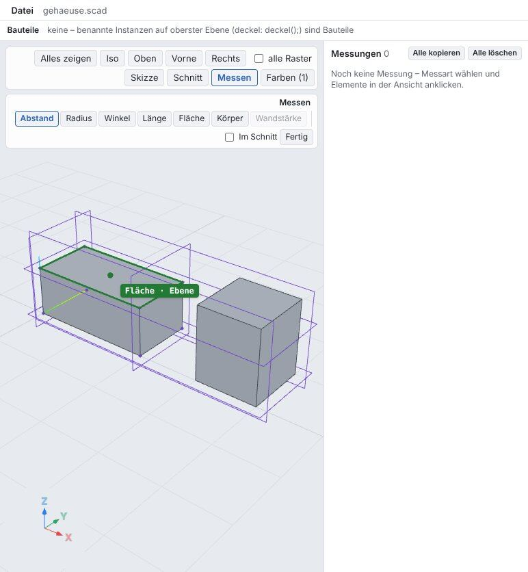
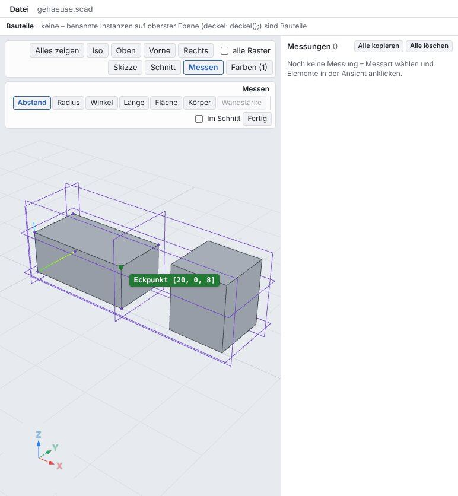
- hover face with grid plane g.o
- vertex [20, 0, 8] = grid point g[b, v, o]
- edge midpoint
- Esc: mode off
M02 Distance
Two clicks: minimum distance of the elements with foot points, from the exact B-rep (alternating projection onto planes, cylinders, … in closed form). For parallel planes the normal distance applies. The dimension line connects the foot points, the label sits in the middle; the list on the right shows values, Δx/Δy/Δz and origin.
grid g {
x: a = 0, b = 20;
y: v = 0, h = 10;
z: u = 0, o = 8;
}
box(g[a, v, u], g[b, h, o]);
translate([30, 0, 0]) cube([10, 10, 12]);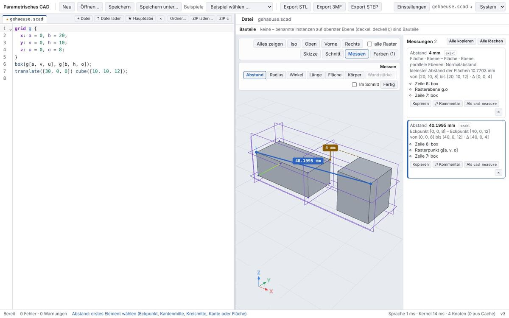
- normal distance 4 mm (exact)
- vertices 40.199502 mm, Δx 40, Δz 4
- cad measure --distance vertex@[0,0,8] vertex@[40,0,12]
M03 Radius and diameter
Radius of a circular edge or round face from the B-rep: cylinder, cone, sphere, torus in closed form, fillets on circular edges (surface of revolution of a circular arc) recognized, free-form via curvature. Radius line, center and axis are drawn.
cylinder(h = 10, r = 5); translate([20, -5, 0]) cube([20, 10, 8], $fillet = 2);
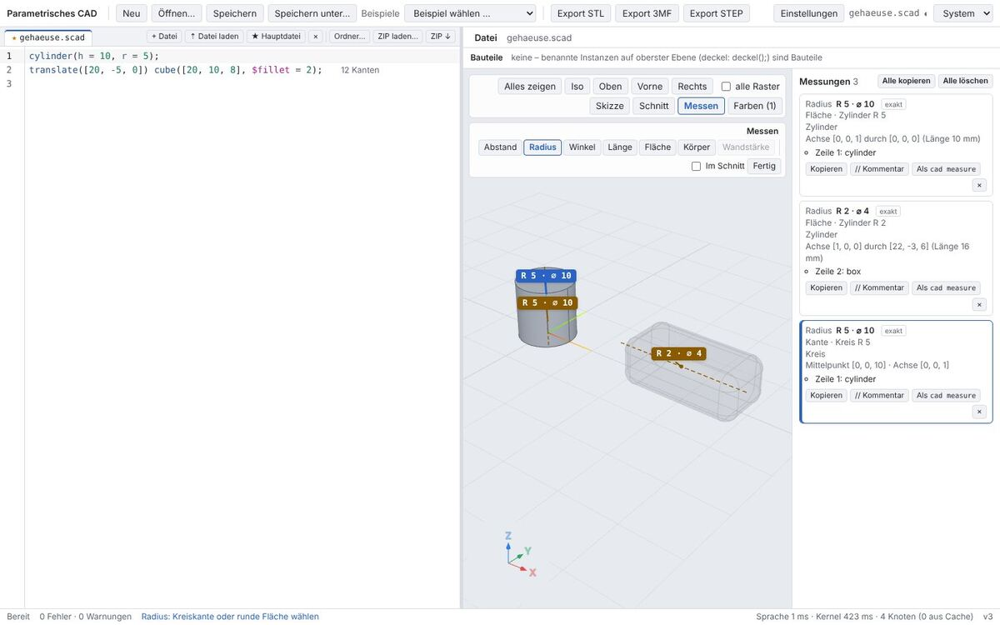
- cylinder R 5 · ⌀ 10 with axis
- fillet R 2
- circular edge R 5
M04 Angle
Angle between two edges or faces: planes via their normals (shown: the angle between the planes, plus the opening angle at the intersection line), cylinders and cones via their axis, edges at a common vertex pointing away from the vertex. The arc sits at the intersection line.
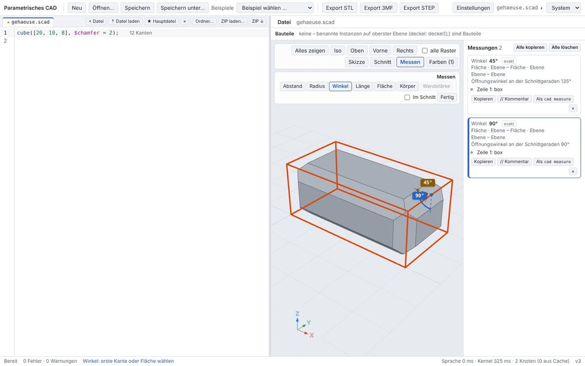
cube([20, 10, 8], $chamfer = 2);
- chamfer 45°
- opening angle 135°
- top face–side 90°
M05 Length, area, body
Length of an edge (exact for lines and arcs, otherwise Gauss–Legendre), area of a face (planar exactly via the boundary, curved via projected subdivision), body: the part of the chosen face (named instance k) with volume and surface area from the kernel and the bounding box from the B-rep (dashed box).
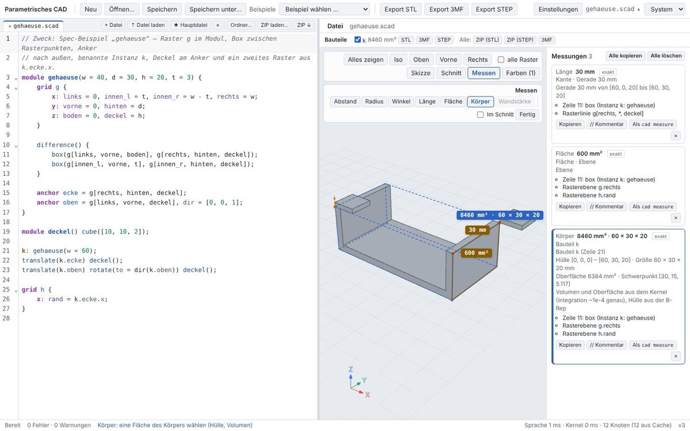
examples/spec/gehaeuse.scad
- length 30 mm
- area 600 mm²
- part k: 8460 mm³, 60 × 30 × 20
5 Measuring in the section
M06 Measuring in the section
"In section" measures in the active section plane: the contours come from the kernel (plane ∩ B-rep via a Boolean with the kept half-space), the segments on cylinders, cones, spheres and tori in closed form (here exact circles). Snap to vertices, midpoints and circle centers of the contour; wall thickness across the contour; area of a region (contour minus holes).
difference() {
cube([40, 20, 6]);
translate([10, 10, -1]) cylinder(h = 8, r = 2);
translate([28, 10, -1]) cylinder(h = 8, r = 3);
}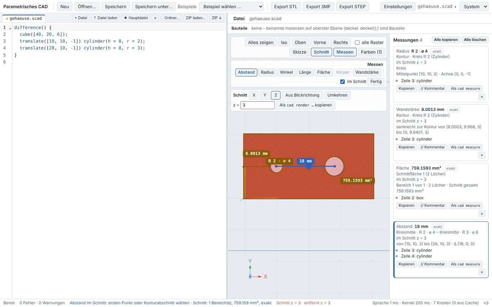
- section exact, 1 region
- bore R 2 · ⌀ 4
- wall thickness 8 mm
- area 759.1593 mm²
- circle centers 18 mm
6 List, copy, link to the language, theme
M07 List of measurements
Multiple measurements stay visible at the same time (also after exiting the mode). A click on a label or entry selects a measurement, Del or × deletes it, "Delete all" deletes all. Each measurement can be copied as text, as a code comment (// Messung: …) and as a cad measure call (like "Copy as cad render" for the section).
grid g {
x: a = 0, b = 20;
y: v = 0, h = 10;
z: u = 0, o = 8;
}
box(g[a, v, u], g[b, h, o]);
translate([30, 0, 0]) cube([10, 10, 12]);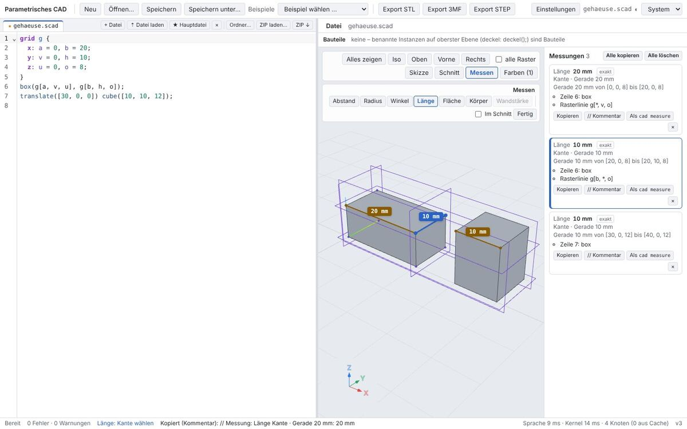
- copied: cad measure gehaeuse.scad --length 'edge@[10.049762,0,8]'
- comment // Messung: Länge …
- Del deletes the selected one
- Delete all
M08 Link to the language
For each chosen element the engine names the code lines of the faces (tags → nodes), the named instance (p: lochplatte) and grids or anchors on which it lies: grid points and grid planes, grid lines for axes (g[loch[0], mitte, *]), anchors (p.erstes_loch).
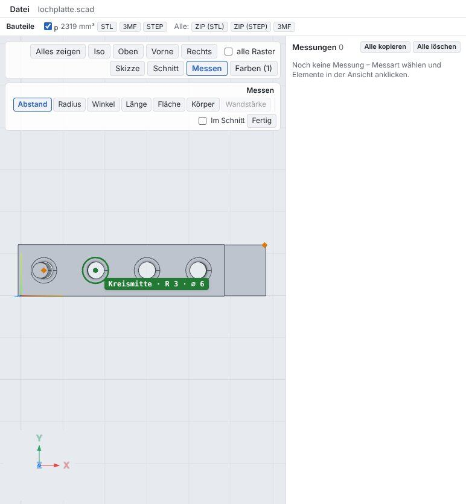
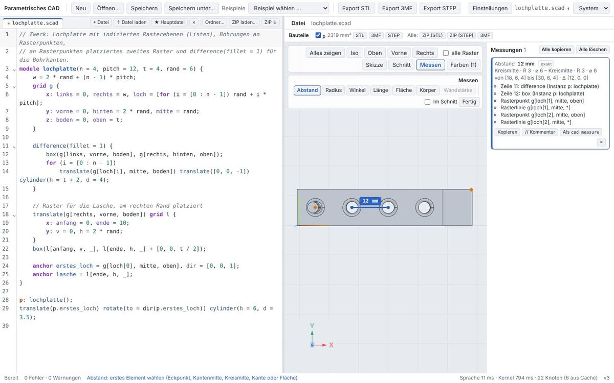
examples/spec/lochplatte.scad
- circle center with instance p
- distance 12 mm = pitch
M09 Dark theme
Dimension lines and labels use the tokens --view-measure/--on-measure (light: dark gold with white text, dark: gold with dark text); contrast.test.ts checks text ≥ 4.5:1 and line against background ≥ 3:1.
grid g {
x: a = 0, b = 20;
y: v = 0, h = 10;
z: u = 0, o = 8;
}
box(g[a, v, u], g[b, h, o]);
translate([30, 0, 0]) cube([10, 10, 12]);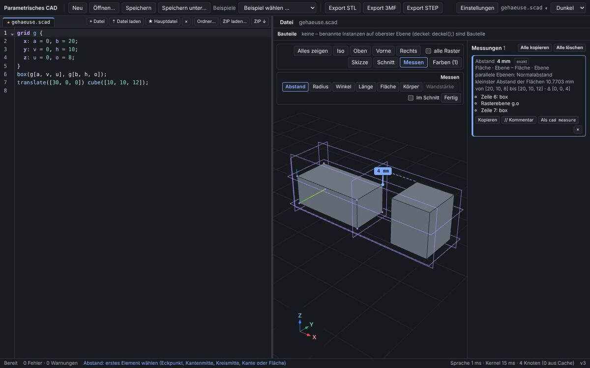
- label contrast 8.10:1
7 Desktop app (Tauri)
Scenario T17 in web/e2e-tauri/desktop.e2e.mjs (tauri-driver, WebKitWebDriver, Xvfb): the app cad with the native engine process, messages via TauriTransport; the view is operated with pointer events on the canvas.
Result: passed in 6.1 s, response under the mouse median 11.0 ms.
- radius of the cylinder: R 5 · ⌀ 10
- normal distance of the top faces: 4 mm (exact)
- label in the view: 4 mm
- section exact: 2 regions, 278.5398 mm²
- circle in the section: R 5 · ⌀ 10
- measure mode exited
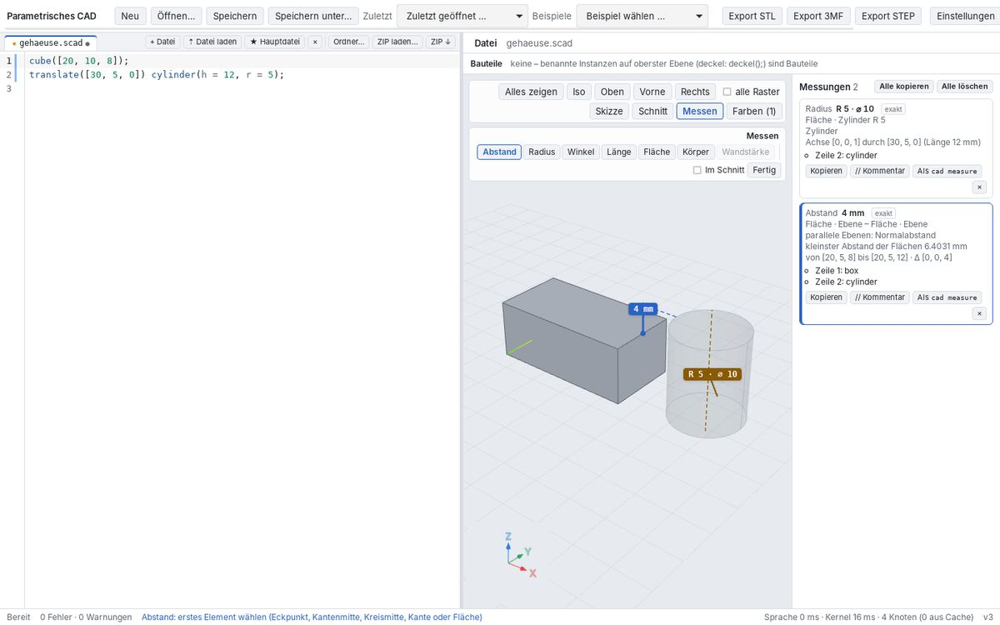
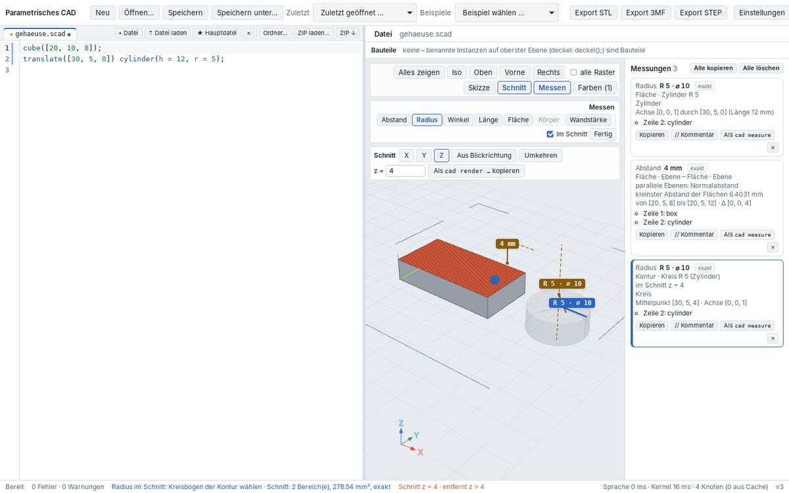
8 CLI: cad measure
The same measurements without UI, for agents with --json. Output from tools/report/report19-data.sh (release binary, without daemon; times per call as the mean of 3 runs including loading and kernel).
Housing in section z = 10: regions, wall thickness, inner dimension (133 ms)
$ cad measure examples/spec/gehaeuse.scad --section z=10 --wall \[0\,15\,10\] --distance edge@\[3\,15\,10\] edge@\[57\,15\,10\] Schnitt z = 10 (entfernt z > 10): 2 Bereich(e), Fläche 180 mm² (exakt: Konturen aus Geraden und Kreisen der B-Rep) Bereich 1: 90 mm², Hülle [57, 0, 10] – [60, 30, 10], 0 Loch/Löcher Bereich 2: 90 mm², Hülle [0, 0, 10] – [3, 30, 10], 0 Loch/Löcher kleinste Wandstärke ≈ 3 mm von [57, 28.125, 10] bis [60, 28.125, 10] (8 Stellen je Konturabschnitt; genau: --wall P) Abstand Kontur · Gerade 30 mm (Ebene) – Kontur · Gerade 30 mm (Ebene): 54 mm von [3, 0, 10] bis [57, 0, 10] · Δ [54, 0, 0] Kontur: Zeile 12: box (Instanz k: gehaeuse) Kontur: Zeile 12: box (Instanz k: gehaeuse) im Schnitt --section z=10 Wandstärke Punkt [0,15,10]: 3 mm senkrecht zur Kontur von [0, 15, 10] bis [3, 15, 10] im Schnitt --section z=10
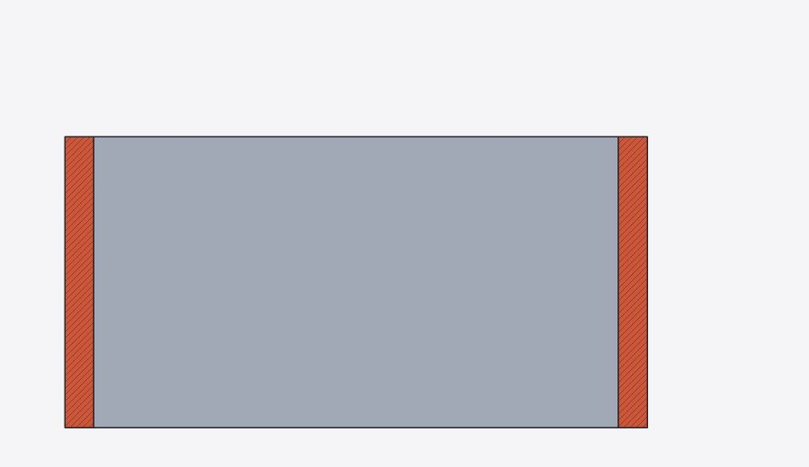
cad render gehaeuse.scad --section z=10 --view top: the two wall regionsHousing: inner distance, part, edge length (114 ms)
$ cad measure examples/spec/gehaeuse.scad --distance face@\[3\,15\,10\] face@\[57\,15\,10\] --body face@\[0\,15\,10\] --length edge@\[60\,15\,20\] Abstand Fläche · Ebene – Fläche · Ebene: 54 mm parallele Ebenen: Normalabstand von [3, 30, 20] bis [57, 30, 20] · Δ [54, 0, 0] Fläche: Zeile 12: box (Instanz k: gehaeuse) Fläche: Rasterebene g.innen_l Fläche: Zeile 12: box (Instanz k: gehaeuse) Fläche: Rasterebene g.innen_r Länge Kante · Gerade 30 mm: 30 mm Gerade 30 mm von [60, 0, 20] bis [60, 30, 20] Kante: Zeile 11: box (Instanz k: gehaeuse) Kante: Rasterlinie g[rechts, *, deckel] Körper Bauteil k: 8460 mm³ Bauteil k (Zeile 21) Hülle [0, 0, 0] – [60, 30, 20] · Größe 60 × 30 × 20 mm Oberfläche 6384 mm² · Schwerpunkt [30, 15, 5.117] Volumen und Oberfläche aus dem Kernel (Integration ~1e-4 genau), Hülle aus der B-Rep Körper: Zeile 11: box (Instanz k: gehaeuse) Körper: Rasterebene g.links
Hole plate: bore, fillet, pitch (1145 ms)
$ cad measure examples/spec/lochplatte.scad --radius face@\[8\,6\,2\] --radius face@\[8.292893\,6\,3.707107\] --distance center@\[6\,6\,0\] center@\[18\,6\,0\] Abstand Kreismitte · R 3 · ⌀ 6 – Kreismitte · R 3 · ⌀ 6: 12 mm von [6, 6, 0] bis [18, 6, 0] · Δ [12, 0, 0] Kreismitte: Zeile 11: difference (Instanz p: lochplatte) Kreismitte: Zeile 12: box (Instanz p: lochplatte) Kreismitte: Rasterpunkt g[loch[0], mitte, boden] Kreismitte: Rasterlinie g[loch[0], mitte, *] Kreismitte: Zeile 11: difference (Instanz p: lochplatte) Kreismitte: Zeile 12: box (Instanz p: lochplatte) Kreismitte: Rasterpunkt g[loch[1], mitte, boden] Kreismitte: Rasterlinie g[loch[1], mitte, *] Radius Fläche · Zylinder R 2: 2 mm Zylinder Achse [0, 0, 1] durch [6, 6, 1] (Länge 2 mm) Fläche: Zeile 14: cylinder (Instanz p: lochplatte) Fläche: Rasterlinie g[loch[0], mitte, *] Radius Fläche · Rotationsfläche: 1 mm Rotationsfläche (Kreisbogen) Mittelpunkt [6, 6, 3] · Achse [0, 0, 1] · Ringradius 3 mm Fläche: Zeile 11: difference (Instanz p: lochplatte) Fläche: Rasterlinie g[loch[0], mitte, *]
Hole plate in section z = 2: circles, area, radius, wall (1234 ms)
$ cad measure examples/spec/lochplatte.scad --section z=2 --radius edge@\[8\,6\,2\] --wall \[8\,6\,2\] Schnitt z = 2 (entfernt z > 2): 1 Bereich(e), Fläche 645.7345 mm² (exakt: Konturen aus Geraden und Kreisen der B-Rep) Bereich 1: 645.7345 mm², Hülle [0, 0, 2] – [58, 12, 2], 4 Loch/Löcher Kreis R 2 · ⌀ 4 bei [6, 6, 2] (center@[6,6,2]) Kreis R 2 · ⌀ 4 bei [18, 6, 2] (center@[18,6,2]) Kreis R 2 · ⌀ 4 bei [30, 6, 2] (center@[30,6,2]) Kreis R 2 · ⌀ 4 bei [42, 6, 2] (center@[42,6,2]) kleinste Wandstärke ≈ 4.0039 mm von [18.125, 12, 2] bis [18.125, 7.9961, 2] (8 Stellen je Konturabschnitt; genau: --wall P) Radius Kontur · Kreis R 2 (Zylinder): 2 mm Kreis Mittelpunkt [6, 6, 2] · Achse [0, 0, -1] Kontur: Zeile 14: cylinder (Instanz p: lochplatte) Kontur: Rasterlinie g[loch[0], mitte, *] im Schnitt --section z=2 Wandstärke Punkt [8,6,2]: 8 mm senkrecht zur Kontur von [8, 6, 2] bis [16, 6, 2] im Schnitt --section z=2
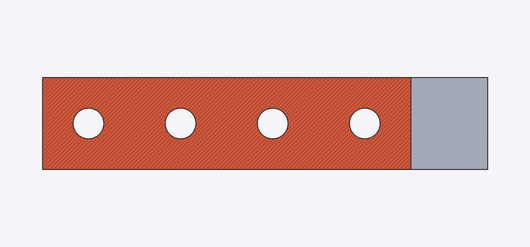
cad render lochplatte.scad --section z=2 --view topWhat lies at P: --at (1136 ms)
$ cad measure examples/spec/lochplatte.scad --at \[8\,6\,2\]
Bei [8, 6, 2]:
vertex@[8,6,1] Eckpunkt [8, 6, 1] (1 mm entfernt)
Zeile 14: cylinder (Instanz p: lochplatte)
Zeile 11: difference (Instanz p: lochplatte)
mid@[8,6,2] Kantenmitte · Gerade 2 mm (0 mm entfernt)
Zeile 14: cylinder (Instanz p: lochplatte)
center@[9,6,1] Kreismitte · R 1 · ⌀ 2 (1.4142 mm entfernt)
Zeile 11: difference (Instanz p: lochplatte)
edge@[8,6,2] Kante · Gerade 2 mm (0 mm entfernt)
Zeile 14: cylinder (Instanz p: lochplatte)
face@[8,6,2] Fläche · Zylinder R 2 (0 mm entfernt)
Zeile 14: cylinder (Instanz p: lochplatte)
Rasterlinie g[loch[0], mitte, *]
Angle of a chamfer (494 ms)
$ cad measure examples/spec/fase_chamfer.scad --angle face@\[39.5\,12\,9.5\] face@\[20\,12\,10\] --angle face@\[20\,12\,10\] face@\[40\,12\,5\] Winkel Fläche · Ebene – Fläche · Ebene: 45° Ebene – Ebene Öffnungswinkel an der Schnittgeraden 135° Fläche: Zeile 9: chamfer Fläche: Zeile 10: box Fläche: Rasterebene g.o Winkel Fläche · Ebene – Fläche · Ebene: 90° Ebene – Ebene Öffnungswinkel an der Schnittgeraden 90° Fläche: Zeile 10: box Fläche: Rasterebene g.o Fläche: Zeile 10: box Fläche: Rasterebene g.b
JSON for agents (excerpt: radius of the bore)
{
"kind": "distance",
"title": "Abstand",
"value": 12,
"unit": "mm",
"label": "12 mm",
"values": [
{
"key": "distance",
"label": "Abstand",
"unit": "mm",
"value": 12
},
{
"key": "dx",
"label": "Δx",
"unit": "mm",
"value": 12
},
{
"key": "dy",
"label": "Δy",
"unit": "mm",
"value": 0
},
{
"key": "dz",
"label": "Δz",
"unit": "mm",
"value": 0
}
],
"exact": true,
"details": [
"von [6, 6, 0] bis [18, 6, 0] · Δ [12, 0, 0]"
],
"picks": [
{
"kind": "center",
"reference": "center@[6,6,0]",
"label": "Kreismitte · R 3 · ⌀ 6",
"origin": [
"Zeile 11: difference (Instanz p: lochplatte)",
"Zeile 12: box (Instanz p: lochplatte)",
"Rasterpunkt g[loch[0], mitte, boden]",
"Rasterlinie g[loch[0], mitte, *]"
]
},
{
"kind": "center",
"reference": "center@[18,6,0]",
"label": "Kreismitte · R 3 · ⌀ 6",
"origin": [
"Zeile 11: difference (Instanz p: lochplatte)",
"Zeile 12: box (Instanz p: lochplatte)",
"Rasterpunkt g[loch[1], mitte, boden]",
"Rasterlinie g[loch[1], mitte, *]"
]
}
],
"cli": [
"--distance",
"center@[6,6,0]",
"center@[18,6,0]"
],
"text": "Abstand Kreismitte · R 3 · ⌀ 6 – Kreismitte · R 3 · ⌀ 6: 12 mm\n von [6, 6, 0] bis [18, 6, 0] · Δ [12, 0, 0]\n Kreismitte: Zeile 11: difference (Instanz p: lochplatte)\n Kreismitte: Zeile 12: box (Instanz p: lochplatte)\n Kreismitte: Rasterpunkt g[loch[0], mitte, boden]\n Kreismitte: Rasterlinie g[loch[0], mitte, *]\n Kreismitte: Zeile 11: difference (Instanz p: lochplatte)\n Kreismitte: Zeile 12: box (Instanz p: lochplatte)\n Kreismitte: Rasterpunkt g[loch[1], mitte, boden]\n Kreismitte: Rasterlinie g[loch[1], mitte, *]"
}
JSON of the section (excerpt)
{
"plane": {
"normal": [
0,
0,
1
],
"point": [
0,
0,
2
]
},
"exact": true,
"max_dev": 0,
"area": 645.734517543,
"regions": [
{
"area": 645.734517543,
"holes": 4,
"bounds": {
"max": [
58,
12,
2
],
"min": [
0,
0,
2
]
},
"contours": 5
}
],
"circles": [
{
"center": [
6,
6,
2
],
"diameter": 4,
"full": true,
"radius": 2
},
{
"center": [
18,
6,
2
],
"diameter": 4,
"full": true,
"radius": 2
},
{
"center": [
30,
6,
2
],
"diameter": 4,
"full": true,
"radius": 2
},
{
"center": [
42,
6,
2
],
"diameter": 4,
"full": true,
"radius": 2
}
],
"min_wall": {
"from": [
18.125,
12,
2
],
"samples_per_segment": 8,
"thickness": 4.00391007217,
"to": [
18.125,
7.99608992783,
2
]
}
}
9 Analytic check
Small models, measured via the CLI (same logic as the UI), against the formula. Limit 10⁻⁶ relative; volume comes from the kernel's integration (SMLib, ~10⁻⁴) and has the limit 10⁻³.
| Case | Call | expected | measured | deviation | exact |
|---|---|---|---|---|---|
| Cylinder r 5, radius | --radius face@[5,0,5] | 5.000000 | 5.000000 | 0 | yes |
| Cylinder r 5, lateral area | --area face@[5,0,5] | 314.159265 | 314.159265 | -3.0e-7 | yes |
| Cylinder r 5, circular edge length | --length edge@[0,5,10] | 31.415927 | 31.415927 | 2.1e-12 | yes |
| Cylinder, cap faces normal distance | --distance face@[1,1,10] face@[1,1,0] | 10.000000 | 10.000000 | 0 | yes |
| Cone r 4→2, radius at h 5 | --radius face@[3,0,5] | 3.000000 | 3.000000 | 0 | yes |
| Cone r 4→2, half angle | --radius face@[3,0,5] | 11.309932 | 11.309932 | -2.0e-11 | yes |
| Cone r 4→2, lateral area | --area face@[3,0,5] | 192.228507 | 192.228425 | -8.2e-5 | yes |
| Sphere r 5, radius | --radius face@[0,0,5] | 5.000000 | 5.000000 | 0 | yes |
| Sphere r 5, volume (kernel) | --body body@[0,0,5] | 523.598776 | 523.598364 | -4.1e-4 | yes |
| Torus R 10 r 2, tube radius | --radius face@[12,0,0] | 2.000000 | 2.000000 | 0 | yes |
| Torus R 10 r 2, ring radius | --radius face@[12,0,0] | 10.000000 | 10.000000 | 0 | yes |
| Fillet r 2 (straight edge) | --radius face@[19.414214,5,7.414214] | 2.000000 | 2.000000 | 0 | yes |
| Fillet r 1 (circular edge) | --radius face@[12.292893,10,5.292893] | 1.000000 | 1.000000 | 0 | yes |
| Chamfer 2 mm, angle to top face | --angle face@[19,5,7] face@[10,5,8] | 45.000000 | 45.000000 | 0 | yes |
| Chamfer 2 mm, opening angle | --angle face@[19,5,7] face@[10,5,8] | 135.000000 | 135.000000 | 0 | yes |
| Section through bore r 3, radius | --section z=3 --radius edge@[13,10,3] | 3.000000 | 3.000000 | 0 | yes |
| Section, area of the region | --section z=3 --area region@[1,1,3] | 371.725666 | 371.725666 | 3.1e-10 | yes |
| Section, wall thickness bore–edge | --section z=3 --wall [7,10,3] | 7.000000 | 7.000000 | 0 | yes |
| Oblique section (45°) through bore r 3: semi-major axis | --section-plane 10,10,5,1,0,1 --radius edge@[10,13,5] | 4.242641 | 4.242641 | 7.1e-13 | yes |
| Oblique section (45°): semi-minor axis | --section-plane 10,10,5,1,0,1 --radius edge@[10,13,5] | 3.000000 | 3.000000 | 0 | yes |
| Housing: wall thickness in section z 10 | --section z=10 --wall [0,15,10] | 3.000000 | 3.000000 | 0 | yes |
10 Measurements
M10 Response times
Mouse pass over the hole plate (41 positions, 16 ms each): at most one request in flight, the last position wins. Measured from request until response in the browser (worker, Wasm kernel, SwiftShader without GPU).
- 42 responses, median 2.9 ms, 95 % 48.0 ms
11 Test runs
| Run | Result |
|---|---|
cargo test --workspace -- --test-threads=2 | 574 passed, 0 failed |
cargo clippy --workspace --all-targets -- -D warnings (native and -p cad-wasm --target wasm32-unknown-unknown) · cargo fmt --check | clean · clean |
pnpm typecheck · pnpm test (Vitest) | clean · 233 passed |
pnpm e2e (Playwright, Chromium, full suite) | 131 passed, 0 failed |
| Tauri E2E T17 | passed |
| Analytic cases via the CLI | 21 of 21 within the limit |
Flaky tests fixed (previously red sporadically, also without measure mode): waitHandles still answered with the handles of the previous cursor line (B06, B10) and now waits for settled handles; clickAt in M01–M11 and the click in T17 wait for the click's own effect instead of any response; T17 picks faces with Alt (without point snapping). Nothing skipped or disabled.
New Rust tests (22):
usage_errors ok · chamfer_angle_and_at ok · housing_section_wall_and_distances ok · usage_errors ok · hole_plate_radii_bores_fillets_and_pitch ok · curve::tests::arc_basics ok · curve::tests::ellipse_length ok · curve::tests::line_ray ok · dist::tests::distance_of_cubes ok · num::tests::quadrature_and_minimum ok · surface::tests::projections ok · cylinder_radius_area_length ok · distances ok · fillet_and_chamfer ok · section_through_bores_and_wall ok · cone_sphere_torus ok · distance_by_clicks_parallel_planes_and_cli ok · housing_wall_thickness_in_the_section_and_inner_distance ok · angle_of_a_chamfer ok · section_mode_over_the_protocol ok · snaps_vertices_midpoints_faces_with_provenance ok · radius_of_bores_and_fillets_in_the_hole_plate ok
cad-measure tests/analytic.rs: cylinder (radius, axis, lateral and cap area, circle length, normal distance), cone (radius, half angle, apex, lateral area), sphere and torus (radii, areas, bounding box), fillet cylinder and fillet sphere of a cuboid, fillet torus of a circular edge, chamfer 45°/135°, distances, section through two bores (exact circles, area, wall thicknesses, longitudinal section, oblique section as ellipse); unit tests of curves, surfaces and quadrature. cad-session tests/measure.rs: snap (face, vertex, edge midpoint, edge) with provenance, clicks and CLI arguments, references, hole plate, housing with wall thickness in the section, part volume, chamfer, section mode via the protocol. cad-cli tests/messen.rs: JSON and text of the new options, usage errors. Vitest logic/measure.test.ts.
12 Limitations
- The section needs one kernel Boolean per part and plane; if it fails, there is no section (message), no substitute contour from the mesh.
- Contours on free-form surfaces and on obliquely cut cones, tori and surfaces of revolution remain kernel curves (
exact = false). - Wall thickness perpendicular to the contour at one location; the minimum wall thickness of the section is an estimate from samples.
- Distances between free-form surfaces and cases in which the projection ends at a different local minimum hold within the tessellation tolerance; areas of free-form faces from the triangles; volume from the kernel (~10⁻⁴).
- CLI references via the nearest point are unambiguous as long as P is closest to one element; results appear in the order of the options.
- 2D results (sketches without extrusion) cannot be measured; the list of measurements is not saved.
- Until the UI rework the context bar sits in the stack at the top right (the view toolbar wraps), the list to the right of the view.
- Tauri T17 operates the view with synthetic pointer events; timings from SwiftShader or software GL are only meaningful relative to each other.